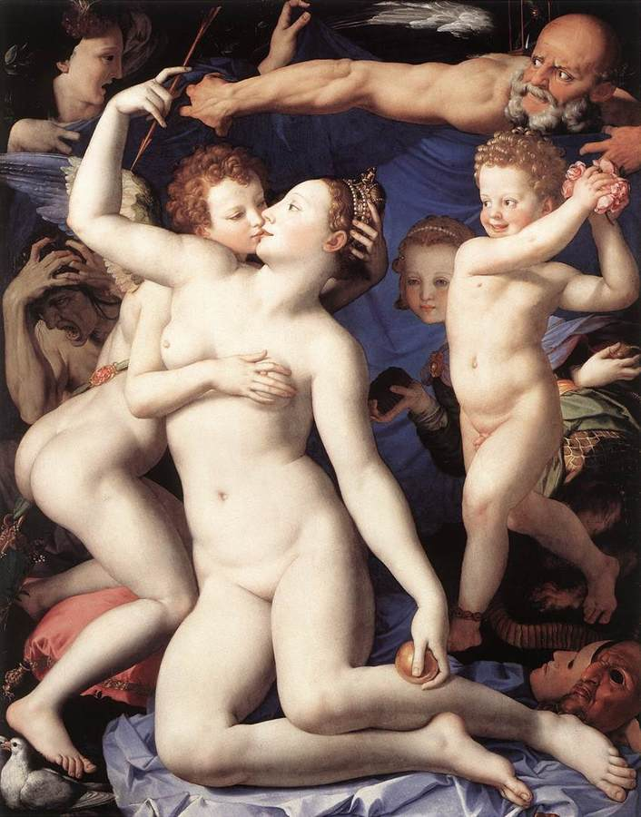
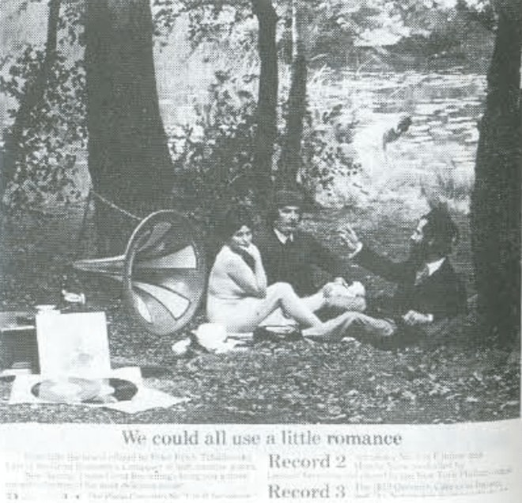
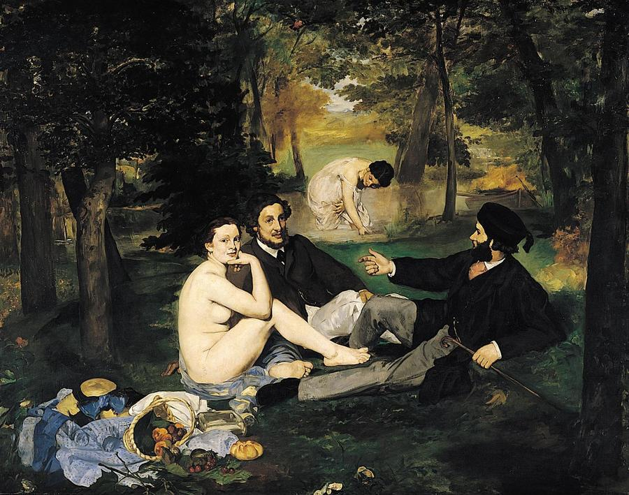

Week 02 Response
Ways of Seeing




The videos were quite insightful and I learned a lot from each one. I think each video had it’s own deeper meaning, which I really enjoyed reading about. John Berger is so knowledgeable on the concepts of the world, and how societies have been structured for years. Oil paintings and publicity have many similarities, but without these videos, I would have never seen it this way. For example, the comparison of the word “naked” vs. “nude”, and how naked is to “be yourself” while nude is to be “seen naked by others but not recognized as oneself”. Being naked is how you perceive yourself while being nude is how others perceive you. To me, being nude has a shameful connotation behind it while naked feels so real and so vulnerable. I don’t have to worry about what I look like when I am being open with myself; there are no societal pressures upon me. However, as a woman, I feel like the world wants me to look a certain way, which makes me feel even more insecure about myself, and soon that nakedness is stripped away from me as well. Another quote that stuck out to me is that “the painful thing about narcissism is the feeling of inadequacy”, and I think that’s the root of all publicity and glamour. Like Berger said, publicity preys on the fear of not being enough, or not having enough. Narcissism is the root of that fear. If you didn’t think about yourself all the time, you wouldn’t feel the need to keep spending on items you don’t really need. Publicity also suggests that if you buy an item shown, your life will be different than before, and you can achieve that life you’ve always dreamed of. But would it really change your life? Or would you just be poorer than before.